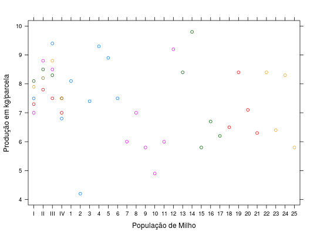

Experimento envolvendo populações de milho no delinemanto em blocos aumentados com 4 populações comuns e 25 populações regulares.
Um data.frame com 48 observações e 4 variáveis, em que
popblocprodRAMALHO et al. (2005), Exemplo 11.13, pág. 188.
library(lattice) data(RamalhoEg11.13)#> Warning: data set ‘RamalhoEg11.13’ not foundstr(RamalhoEg11.13)#> 'data.frame': 45 obs. of 3 variables: #> $ pop : Factor w/ 29 levels "I","II","III",..: 1 2 3 4 5 6 7 8 9 10 ... #> $ bloc: Factor w/ 5 levels "1","2","3","4",..: 1 1 1 1 1 1 1 1 1 1 ... #> $ prod: num 7.5 8.2 9.4 6.8 8.1 4.2 7.4 9.3 8.9 7.5 ...xyplot(prod ~ pop, groups = bloc, data = RamalhoEg11.13, xlab = "População de Milho", ylab = "Produção em kg/parcela")